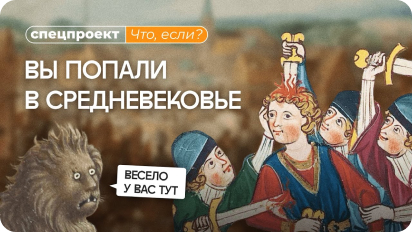
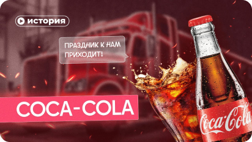

Избранное
поиск
Избранное
Философия Идущего к реке
Правое полушарие интроверта
31 мин 25 сек

Как выжить в Средние века?
Правое полушарие интроверта
31 мин 25 сек

История Кока Колы
Правое полушарие интроверта
31 мин 25 сек